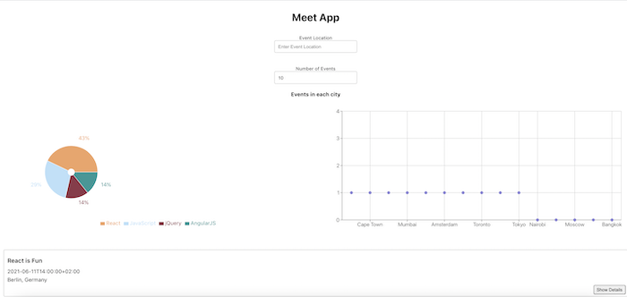

The Meet App is a serverless, progressive web application (PWA), build with React. The Meet App allows users to view upcoming web development events, search for a city and get a list of events hosted in that city. The App uses the Google Calendar API (to fetch upcoming events) and OAuth2 authentication flow. For this app, I used a test-driven development (TDD) approach.
The focus of this project was to follow a test-driven development approach and create test suites that include unit-testing, integration-testing, and end-to-end testing. The app uses AWS Lambda for the authorization server (instead of using a traditional server) and implement a server less structure. Google OAuth 2.0 is used to access the Google Calendar API. The app passes Lighthouse PWA checklist and users are able to install the app on their browser or mobile home screen. Finally, two graphs has been implemented (using recharts) to provide users with data visualization.